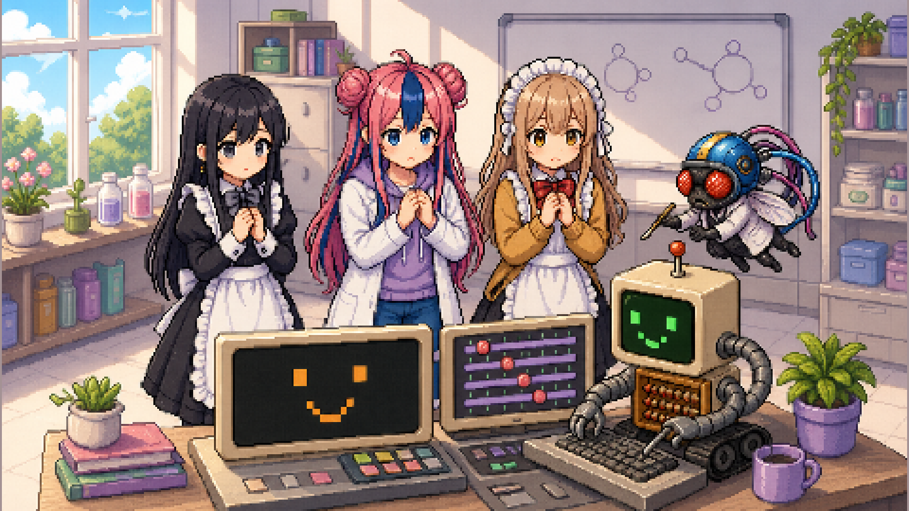
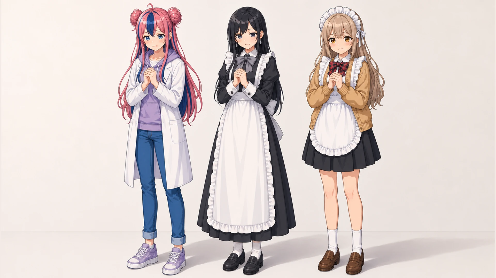
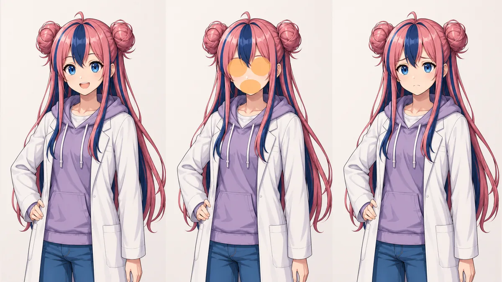
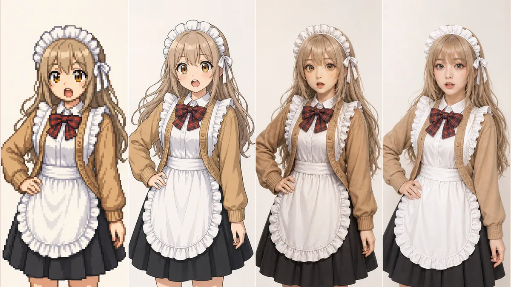
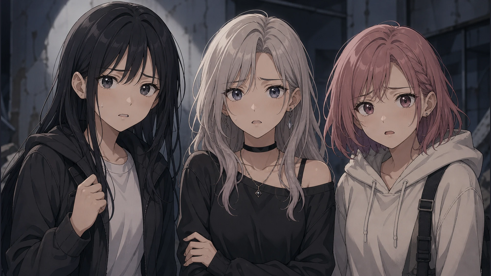
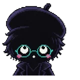

오늘의 과제

박사세 사람이 같은 '걱정'을 연기한다. AI에게 그리게 해 보자.

주판봇'worried' 한 단어면 충분합니다! 짧을수록 빠릅니다!

초파리 연구원그럼 얼굴만 살짝 찡그리고 몸은 차렷일걸. 1~4부를 문장으로 나눠 주자.

모아저희 셋이 같은 표정이 될 수 있을까요…?

하루·시아·모아가 같은 감정을 연기합니다. AI와 VFX 도구는 기분을 모릅니다. 주판봇은 감정 낱말 하나만 넣고, 초파리는 몸·얼굴·눈·빛을 나눠 적습니다.
그림 실력·코드·수식을 몰라도 됩니다. 실험을 눌러 보며 따라오세요.
감정·얼굴·눈·몸·빛·고정 여섯 조각으로 나눠 적습니다
사진관에서 '자연스럽게 웃으세요'보다 '턱을 조금 들고 어깨 힘을 빼세요'가 훨씬 잘 통합니다.
게임 회사의 표정 요청서는 감정 이름 옆에 눈썹·입·시선·자세·조명 메모를 함께 적습니다. AI 프롬프트도 같은 순서로 쓰면 결과가 덜 흔들립니다.


여섯 조각 중 감정과 얼굴만 있으면 2 / 6입니다. 도구는 빠진 몸과 빛을 평소 모습으로 채웁니다.
몸(머리·목·어깨)과 빛 조각을 넣으면 같은 감정이 장면 전체에서 읽힙니다.
고정·금지 조각은 얼굴·머리·옷을 참고 그림대로 지키고, 성인 비율을 적어 나이가 흔들리지 않게 합니다.

감정 문장을 길게 적었더니 셋의 얼굴이 서로 닮아 버렸습니다. 왜 그럴까요?
표정 문장이 인물 설명보다 강해진 것입니다. 참고 그림을 첨부하고, 'keep each face identity as in the reference'를 고정 조각에 넣으세요. 5부 2단계처럼 얼굴만 다시 그리는 방법도 있습니다.
가림 영역이 작을수록 나머지는 그대로 남습니다

학교 수학으로 보면 — 넓이의 비율 — 직사각형 넓이(가로 × 세로)를 전체 넓이로 나눕니다.
| 식 조각 | 뜻 |
|---|---|
| 가린 넓이 | 다시 그릴 영역의 가로 × 세로(픽셀) |
| 전체 넓이 | 그림 가로 × 세로 |
| 나머지 | 1 − 바뀌는 비율, 원래대로 남는 몫 |

증명사진의 눈 감은 컷을 고칠 때 눈 부분만 다른 컷에서 옮겨 붙이는 것과 같습니다.
이미지 편집 도구의 '부분 수정(영역 칠하기)'은 가림 영역 안만 확산 모델로 다시 그립니다(RePaint 2022 등). 경계를 흐리게 하는 값(페더)을 주면 이음매가 덜 보입니다.

눈·눈썹 2.4%와 입 1.0%를 따로 두 번 고치면, 약 3.5%만 바꾸고 표정 대부분을 바꿀 수 있습니다.
얼굴 전체(12.2%)는 표정이 크게 바뀌는 대신 얼굴형과 눈 색이 흔들릴 수 있습니다. 머리까지(29%)는 고정값이 다시 그려집니다.
작업에서는 작은 영역부터 고치고, 모자랄 때만 넓힙니다. 가림 영역 문장에는 바꿀 표정만 적습니다.

표정만 바꿨는데 머리 번이 사라졌습니다. 무엇이 문제였을까요?
가림 영역이 머리까지 덮었을 가능성이 큽니다. 영역을 눈·눈썹과 입으로 줄이고, 문장에는 'only change the facial expression'만 적습니다. 6부 f8이 이 사례입니다.
미소·눈썹 올림·눈 크게 같은 값을 0~1로 섞어 표정을 만듭니다
학교 수학으로 보면 — 가중합 — 여러 양에 각각의 비중을 곱해 더하는 계산입니다. 평균 점수를 낼 때 과목별 비중을 곱하는 것과 같습니다.
| 식 조각 | 뜻 |
|---|---|
| 값 | 모양마다 0~1의 비중 |
| 움직이는 양 | 그 모양을 끝까지(1) 켰을 때 움직이는 거리 |
| Σ | 모든 모양의 몫을 더한다 |
커피에 우유와 시럽을 섞을 때도 각각의 양에 따라 맛이 정해집니다. 반대 맛(쓴맛·단맛)은 서로 줄여 줍니다.
3D 얼굴은 수십 개의 블렌드셰이프(표정 모양)를 가지며, 애니메이터는 이 값을 시간에 따라 바꿔 표정을 움직입니다. 얼굴 추적 도구에서 흔히 쓰는 이름(mouthSmile, browInnerUp, browDown, eyeWide, jawOpen 등)이 바로 2부의 두 축(눈썹·입)과 3부의 눈꺼풀입니다. 실험 막대 옆 영어 이름이 그 낱말입니다.

미소 0.6, 입꼬리 내림 0.5를 섞으면 입꼬리는 +2px만 올라갑니다. 반대 값은 서로 깎습니다.
섞인 감정은 일부러 만들 수 있습니다. 미소 + 눈썹 안쪽 올림은 곤란한 웃음, 미소 + 눈썹 내림은 심술궂은 웃음입니다.
작업에서는 2부의 감정 지도를 값 표로 바꿔 두고(예: 喜 = 미소 0.9 + 입 벌림 0.6), 그 표에서 출발해 조금씩 고칩니다.
3D 얼굴에서 '기쁨' 값을 1로 올렸더니 눈이 동그랗게 떠진 채 입만 웃습니다. 왜 그럴까요?
기쁨이 입 모양 하나에만 묶여 있습니다. 3부처럼 눈도 웃어야 하므로, 눈꺼풀(아래 올림)과 눈썹 값을 함께 묶은 '기쁨 세트'를 만드세요.
픽셀은 크게, 실사는 작게 — 같은 감정도 화풍마다 표정 값이 다릅니다
멀리 있는 사람에게는 손을 크게 흔들고, 가까이 있는 사람에게는 고개만 살짝 끄덕입니다. 보이는 크기에 따라 동작을 조절합니다.
게임은 같은 캐릭터를 도트(픽셀) 아이콘, 애니풍 일러스트, 3D 모델로 동시에 만듭니다. 표정 세트도 화풍마다 따로 조정해 같은 감정으로 읽히게 맞춥니다.
세기 0.7에서 픽셀은 0.7 × 1.6 = 1.12라 끝(1)까지, 애니풍은 0.91, 반실사는 0.7, 실사풍은 0.49입니다.
픽셀은 눈·입이 점 몇 개뿐이라 크게 과장해야 읽힙니다. 실사풍은 작게 움직이고 그늘과 붉은 기로 보탭니다.
작업에서는 화풍마다 과장 배수를 표로 정해 두고, AI 문장에도 'subtle' 또는 'exaggerated'를 화풍에 맞게 적습니다.

실사풍 그림에서 놀람을 '아주 크게' 부탁했더니 우스꽝스럽습니다. 어떻게 할까요?
실사풍은 'subtle surprise: slightly widened eyes, lips parted'처럼 작게 적습니다. 대신 빛과 그늘로 긴장감을 보탭니다.
이 부에서 배운 원리를 그림 생성 AI(Genspark 등)로 직접 확인합니다. A는 이 페이지 그림을 실제로 만든 프롬프트, B는 원리를 하나 빼거나 바꾼 비교용 문장입니다.
참고 그림 내려받기: haru_anime_base · sia_anime_base · moa_anime_base · haru_sheet · sia_sheet · moa_sheet · doctor_sheet · fruitfly_sprites_6 · jupanbot_ref_genspark_v0 · pixel_style_ref_prev_cover
여섯 조각 표정 문장으로 세 사람이 같은 기분을 연기하는지 봅니다.
첨부: refs/haru_anime_base.png, refs/sia_anime_base.png, refs/moa_anime_base.png
Illustration, wide 16:9. Art style: high-quality anime illustration, clean confident lineart, two-tone cel shading, natural adult proportions. Match the attached reference images exactly (face, hair, colors, accessories). All characters are adults in their early twenties (the Professor is an adult man in his thirties, normal proportions, not chibi); modest outfits exactly as described. Three characters standing side by side, full body, all acting the same mood — worried: Haru (adult lab assistant, long straight pink hair with navy streaks and a thick navy streak down the center of the bangs, two round hair buns on top, small ahoge, big blue eyes), wearing lavender hoodie with white drawstrings over a white t-shirt, open white knee-length lab coat, rolled-up jeans, lavender sneakers; Sia (adult maid intern, long straight jet-black hair, no headdress, gray eyes, small silver earrings), wearing charcoal-black long-sleeved maid dress, large gray bow at the collar, long white frilled apron; Moa (adult maid intern, long ash-beige wavy hair, white frilled maid headband with a white ribbon over her LEFT ear, amber eyes), wearing camel knit cardigan over a white blouse, red and navy plaid bow tie, white frilled apron, black skirt. Each has her head slightly lowered, inner eyebrows raised, lips slightly pressed, both hands held in front of the chest; each keeps her own face and hairstyle. Soft light from the upper left with a faint shadow over the eyes. Plain off-white studio background or a bright clean lab interior. No text, no letters, no numbers, no speech bubbles, no logos, no watermark, no revealing clothing, not childlike, no school uniform, not resembling any famous anime character.
Three young adult women named Haru, Sia and Moa standing side by side, worried. Anime style. No text.

실제 결과: A는 세 사람이 각자의 머리 모양(번·흑발·리본)을 지키며 가슴 앞에 손을 모은 걱정 자세를 했습니다. B(첨부 없이 감정 낱말만)는 하루·시아·모아와 전혀 다른 세 사람이 어두운 거리 배경에 나왔고, 자세도 제각각이었습니다. 참고 그림과 여섯 조각 문장이 무엇을 지켜 주는지 한눈에 보입니다.
B는 일부러 참고 그림 없이, 새 대화에서 만듭니다. 원리를 뺐을 때 무엇이 사라지는지 보기 위해서입니다.
눈·눈썹과 입만 가려 표정을 바꿀 때 나머지가 그대로 남는지 봅니다.
첨부: refs/haru_anime_base.png, refs/sia_anime_base.png, refs/moa_anime_base.png
Illustration, wide 16:9. Art style: high-quality anime illustration, clean confident lineart, two-tone cel shading, natural adult proportions. Match the attached reference images exactly (face, hair, colors, accessories). All characters are adults in their early twenties (the Professor is an adult man in his thirties, normal proportions, not chibi); modest outfits exactly as described. Three panels of the same upper-body portrait: 1) Haru (adult lab assistant, long straight pink hair with navy streaks and a thick navy streak down the center of the bangs, two round hair buns on top, small ahoge, big blue eyes), wearing lavender hoodie with white drawstrings over a white t-shirt, open white knee-length lab coat, rolled-up jeans, lavender sneakers with a bright smile; 2) the same image with only the eyes, eyebrows and mouth covered by semi-transparent orange patches with slightly soft edges, everything else clearly outside the patches; 3) the result: identical hair buns, navy streaks, face shape and outfit, but a worried expression (inner eyebrows raised, lips pressed). Hair, face shape and clothes must be identical in all three panels. No labels. Plain off-white studio background or a bright clean lab interior. No text, no letters, no numbers, no speech bubbles, no logos, no watermark, no revealing clothing, not childlike, no school uniform, not resembling any famous anime character.
Paint the mask over the whole head including the hair buns and the bangs. Instruction: make her look worried.
실제 결과: A는 세 번째 그림에서 머리 번·남색 줄·옷이 그대로 남고 표정만 약하게 걱정으로 바뀌었습니다. B(머리까지 넓게 가리기) 그림은 아직 만들지 않았습니다. 부분 수정 기능으로 직접 해 보고, 머리 모양이 바뀌는지 6부 f8과 비교해 보세요.
옷장 편과 같이, 부분 수정은 그림 생성이 아니라 도구의 '부분 수정(영역 칠하기)' 기능으로 합니다.
| 항목 | 주판봇 | 초파리 |
|---|---|---|
| 닮음 | 6 | 9 |
| 원리 | 3 | 9 |
| 자연스러움 | 5 | 8 |
| 합계 | 14 | 26 |




점수는 이야기 속 예시입니다. 실제 그림을 평가한 값이 아닙니다.
| 주제 | 한 줄 | 작업에서는 |
|---|---|---|
| 표정 문장 | 감정·얼굴·눈·몸·빛·고정 여섯 조각 | 감정 낱말 하나로 끝내지 않는다 |
| 가림 영역 | 바뀌는 비율 = 가린 넓이 ÷ 전체 넓이 | 눈·눈썹과 입부터, 작게 |
| 표정 값 | 섞인 위치 = 기본 + Σ(값 × 움직이는 양) | 반대 값은 함께 올리지 않는다 |
| 화풍별 과장 | 실제 값 = 세기 × 과장 배수 | 픽셀은 크게, 실사는 작게 |

이 페이지에 나온 개념·방법·비유·쓰임을 모았습니다. 검색하고, "설명 보러 가기"로 본문에 돌아갑니다.
지식 색인을 출처와 함께 파일로 내려받습니다. 서지 관리는 BibTeX·RIS, 온톨로지 편집은 Turtle, 그래프 도구는 CSV, 여러 페이지 합치기는 kg.json입니다.